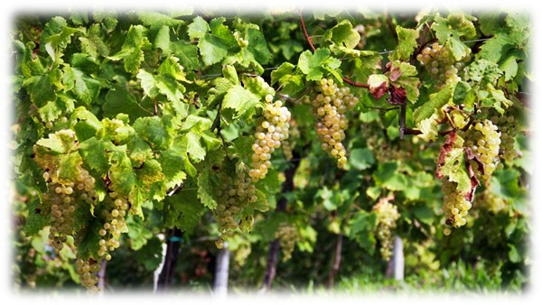

Valdobbiadene: terra di cultura e tradizione
Valdobbiadene, città della provincia di Treviso, vanta una notevole importanza a livello commerciale e tradizionale per la coltivazione della vite e per la produzione del vino, specialmente il Prosecco D.O.C.G., conosciuto ed apprezzato in tutto il mondo per il suo color giallo paglierino, il suo profumo fruttato e la frizzantezza delle bollicine. La coltivazione dell'uva e la sua raccolta nel mese di Settembre è un lavoro che, in questa zona, impegna molti terreni e molti agricoltori da parecchie generazioni, diventando una vera e propria tradizione che si è affermata nel tempo, incrementando il turismo e l'importanza economica del territorio.
Valdo Grape Harvest è un servizio che, in collaborazione con il Comune di Valdobbiadene, si impegna nella raccolta e archiviazione di dati ad ogni singola vendemmia; dati che riguardano le aziende vinicole, i viticoltori in attività nel territorio valdobbiadenese ed i lavoratori di entrambe le parti. Il servizio offre inoltre, in modo privato, la registrazione dei contratti di vendita che vengono stipulati tra singolo viticoltore ed azienda, dei rispettivi pagamenti per ogni contratto stipulato e dei documenti di trasporto compilati per ogni carico trasportato.